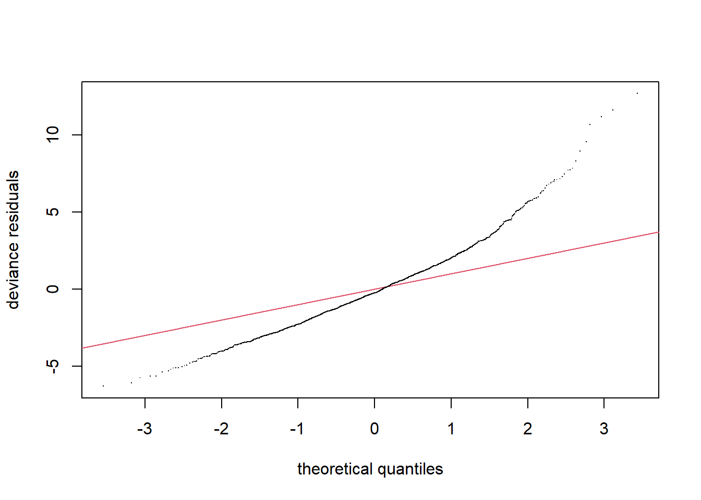
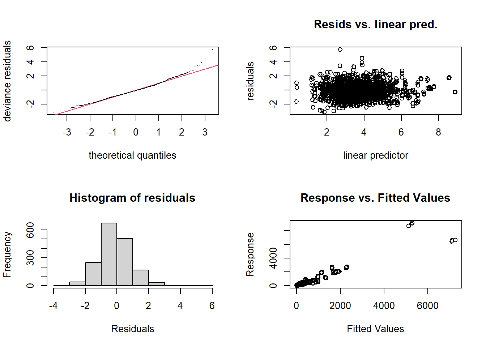
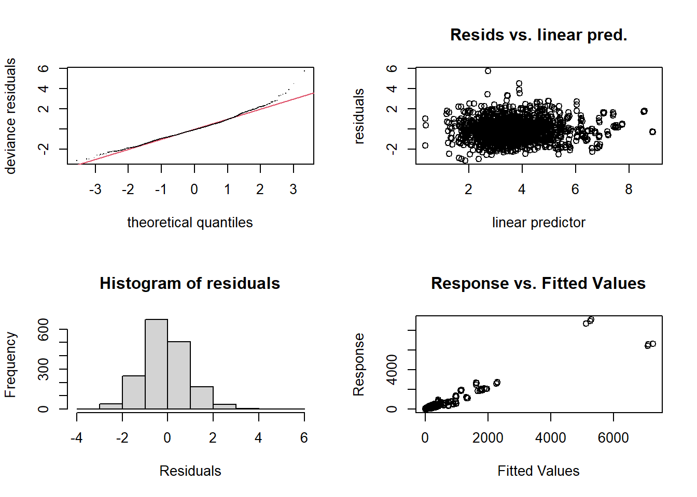
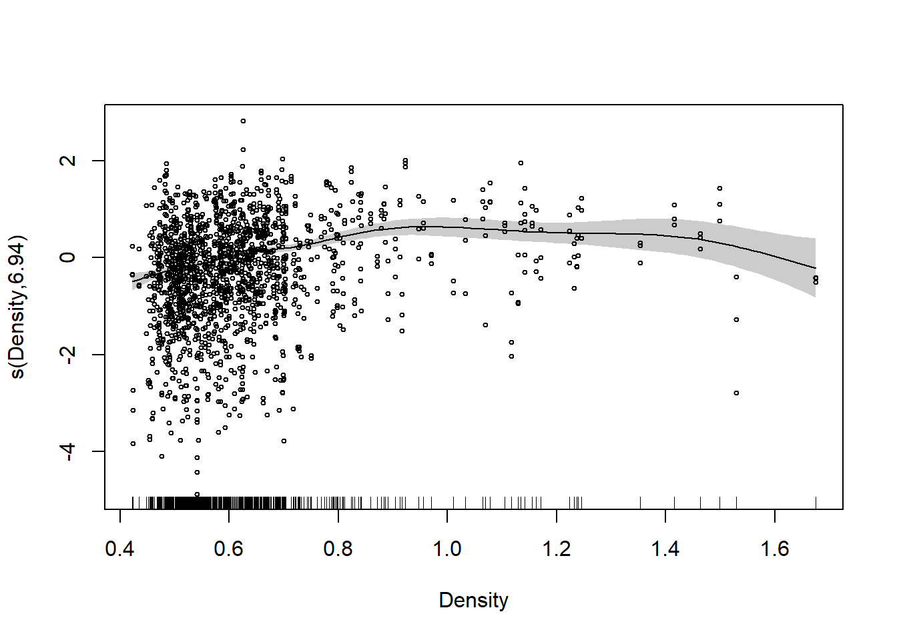

Group 34 course work
Report
Notes: no more than six figures and/or three tables • [15 marks] Understanding and exploration of both the problem and the data. • [10 marks] Thoroughness and rigour, e.g. clear mathematical description of models. • [25 marks] Clear exposition of the steps you took in model fitting and exposition of a final model. • [20 marks] Clear presentation and interpretation of results. • [10 marks] Critical review of the analysis. • [20 marks] Clarity and conciseness in writing and tidy presentation of R code and associated plots.
Introduction:
Briefly describe the Tuberculosis disease and the significance of understanding the factors that affect its spread.
Explain why a GAM is an appropriate modeling technique for this problem.Exploratory Data Analysis:
Provide a summary of the Tuberculosis dataset, including descriptive statistics and visualizations.
Identify any patterns or trends in the data, such as geographical or temporal clusters of cases.
Discuss any issues with the data, such as outliers or inconsistencies.Model Selection:
Explain the process used to select the variables to include in the GAM model.
Discuss any variable transformations or interactions that were considered.
Discuss any model assumptions that were evaluated, such as the normality of the residuals, the linearity of the predictor variables, and the spatial and temporal autocorrelation.Model Fitting:
Explain the process used to fit the GAM model, such as the choice of smoothing functions, the type of penalty used, and the optimization algorithm used to estimate the parameters.
Describe the hyperparameters used, such as the degree of smoothing or the type of penalty used.Model Evaluation:
Provide a summary of the goodness-of-fit measures used to evaluate the model, such as the explained variance, the deviance, and the residual analysis.
Discuss any limitations or assumptions of the GAM model, such as the potential for overfitting or the sensitivity to the choice of smoothing parameters.
Compare the GAM model to other models that were considered, such as a generalized linear model(GLM).Results and Interpretation:
Present the results of the GAM model, including the coefficients and their confidence intervals.
Interpret the coefficients and their practical significance.
Provide visualizations of the model predictions and any interactions or nonlinear relationships.Conclusion:
Summarize the findings of the GAM model.Apendix
TODO change format to docx to fix all the formating errors and the heatmap
## PLotting map of cases
plot.map(TBdata$TB[TBdata$Year == 2014], n.levels = 7, main = "TB counts for 2014")Exploratory analyses
plot_histogram(TBdata)
//TODO talk about the histograms and relevant distributions we can observe
Now investigating the correlation matrix of the numerical variables
plot_correlation(TBdata)As we can see from the matrix, the variable that is the most correlated from TB is the population, with illiteracy, poor sanitation and poverty having a negative correlation with TB.
Poisson definition
As the data is count data we will first fit a Poisson module since this distribution is a good fit for the nature of the data
poisson_model <- gam(TB ~ offset(log(Population)) + s(Indigenous, k = 20) + s(Illiteracy , k = 20) + s(Urbanisation, k = 20) + s(Density, k = 20) + s(Poverty, k = 20) + s(Poor_Sanitation, k = 20) + s(Unemployment, k = 20) + s(Timeliness, k = 20) + s(lat, k = 30) + s(lon, k = 30) + s(Year, k = 3) + ti(lon, lat, Year, k = 3), family = poisson, data = TBdata, method = 'REML')
summary(poisson_model)
Family: poisson
Link function: log
Formula:
TB ~ offset(log(Population)) + s(Indigenous, k = 20) + s(Illiteracy,
k = 20) + s(Urbanisation, k = 20) + s(Density, k = 20) +
s(Poverty, k = 20) + s(Poor_Sanitation, k = 20) + s(Unemployment,
k = 20) + s(Timeliness, k = 20) + s(lat, k = 30) + s(lon,
k = 30) + s(Year, k = 3) + ti(lon, lat, Year, k = 3)
Parametric coefficients:
Estimate Std. Error z value Pr(>|z|)
(Intercept) -8.480233 0.004557 -1861 <2e-16 ***
---
Signif. codes: 0 '***' 0.001 '**' 0.01 '*' 0.05 '.' 0.1 ' ' 1
Approximate significance of smooth terms:
edf Ref.df Chi.sq p-value
s(Indigenous) 18.443 18.925 649.18 < 2e-16 ***
s(Illiteracy) 18.262 18.907 439.58 < 2e-16 ***
s(Urbanisation) 18.888 18.991 741.26 < 2e-16 ***
s(Density) 17.130 17.913 525.38 < 2e-16 ***
s(Poverty) 18.502 18.917 1176.23 < 2e-16 ***
s(Poor_Sanitation) 17.517 18.656 858.89 < 2e-16 ***
s(Unemployment) 18.475 18.944 1450.40 < 2e-16 ***
s(Timeliness) 18.159 18.868 911.93 < 2e-16 ***
s(lat) 28.310 28.939 2406.85 < 2e-16 ***
s(lon) 28.447 28.951 2601.82 < 2e-16 ***
s(Year) 1.847 1.962 46.82 < 2e-16 ***
ti(lon,lat,Year) 3.913 5.017 16.61 0.00535 **
---
Signif. codes: 0 '***' 0.001 '**' 0.01 '*' 0.05 '.' 0.1 ' ' 1
R-sq.(adj) = 0.997 Deviance explained = 87.9%
-REML = 9825.5 Scale est. = 1 n = 1671gam.check(poisson_model)Separate the plots the output is too messy
#Akaike Information Criterion:
poisson_model$aic[1] 18585.52plot(poisson_model, shade=T, rug = TRUE, residuals = TRUE,
pch = 1, cex = 0.5)#Lets check our model residuals:
qq.gam(poisson_model)
Our QQ-plot suggest that the quantiles in our data our not similar to the line as it deviates from the line in nearly all the values, showing a very flawed fit. As this suggests that our current model doesn’t fit the data correctly and required an extension to our model as the Poisson GAM is not accounted for enough deviance as seen in the residuals.
TODO better prepare the residuals and explain them if we have enough figures to show
Since the model is not accounting for enough of the variance we will check if there is a significant difference between the variance and the mean. In this analyses we will use the Pearson estimate for the dispersion parameter, this method allow us to estimate the amount of extra variability, or over-dispersion in count data and therefore analyse if the Poisson distribution assumption of equal mean and variance holds.
#Calculating Pearson estimate for dispersion parameter using Pearson residuals:
sum(residuals(poisson_model, type = "pearson")^2) / df.residual(poisson_model)[1] 6.67687#The dispersion parameter should be 1, so it seems that there is substantial over-dispersion in the Poisson GAM.As we can see from the dispersion parameter should be 1 for the assumption of equal mean and variance to hold true, so it seems that there is substantial over-dispersion in the Poisson GAM. This violates one of the Poisson assumptions that the mean and variance are equal therefore we will have to extend the model from e GAM Poisson to a Negative Binomial GAM
Negatice binomial
#fitting a negative-binomial model to our TB data:
nb_model <- gam(TB ~ offset(log(Population)) + s(Indigenous, k = 20) + s(Illiteracy , k = 20) + s(Urbanisation, k = 20) + s(Density, k = 20) + s(Poverty, k = 20) + s(Poor_Sanitation, k = 20) + s(Unemployment, k = 20) + s(Timeliness, k = 20) + s(lat, k = 30) + s(lon, k = 30) + s(Year, k = 3) + ti(lon, lat, Year, k = 3), negbin(theta = 9, link = "log"), data = TBdata, method = 'REML')
summary(nb_model)
Family: Negative Binomial(9)
Link function: log
Formula:
TB ~ offset(log(Population)) + s(Indigenous, k = 20) + s(Illiteracy,
k = 20) + s(Urbanisation, k = 20) + s(Density, k = 20) +
s(Poverty, k = 20) + s(Poor_Sanitation, k = 20) + s(Unemployment,
k = 20) + s(Timeliness, k = 20) + s(lat, k = 30) + s(lon,
k = 30) + s(Year, k = 3) + ti(lon, lat, Year, k = 3)
Parametric coefficients:
Estimate Std. Error z value Pr(>|z|)
(Intercept) -8.451092 0.009451 -894.2 <2e-16 ***
---
Signif. codes: 0 '***' 0.001 '**' 0.01 '*' 0.05 '.' 0.1 ' ' 1
Approximate significance of smooth terms:
edf Ref.df Chi.sq p-value
s(Indigenous) 2.875 3.451 18.887 0.000643 ***
s(Illiteracy) 4.772 6.034 11.091 0.079313 .
s(Urbanisation) 6.599 8.228 33.224 8.79e-05 ***
s(Density) 6.942 8.637 103.826 < 2e-16 ***
s(Poverty) 2.028 2.608 1.074 0.652302
s(Poor_Sanitation) 8.696 10.680 70.808 < 2e-16 ***
s(Unemployment) 5.532 6.935 92.111 < 2e-16 ***
s(Timeliness) 4.764 5.967 79.993 < 2e-16 ***
s(lat) 21.577 25.088 190.344 < 2e-16 ***
s(lon) 19.462 23.059 239.215 < 2e-16 ***
s(Year) 1.400 1.636 1.888 0.207855
ti(lon,lat,Year) 1.363 1.592 0.819 0.681850
---
Signif. codes: 0 '***' 0.001 '**' 0.01 '*' 0.05 '.' 0.1 ' ' 1
R-sq.(adj) = 0.883 Deviance explained = 58.1%
-REML = 7113.6 Scale est. = 1 n = 1671#Akaike Information Criterion
nb_model$aic[1] 14015.77As we can see from this Akaike Information Criterion(AIC) the Negative Binomial has a significantly lower value than the previous 18585,52 from the GAM Poisson, meaning this is already a better fitting model than the previous one.
Now we will check the residuals to check for any anomalies on our model prediction
gam.check(nb_model)
Method: REML Optimizer: outer newton
full convergence after 7 iterations.
Gradient range [-0.0008538501,2.782458e-05]
(score 7113.619 & scale 1).
Hessian positive definite, eigenvalue range [0.0001209016,3.084703].
Model rank = 221 / 221
Basis dimension (k) checking results. Low p-value (k-index<1) may
indicate that k is too low, especially if edf is close to k'.
k' edf k-index p-value
s(Indigenous) 19.00 2.87 0.54 <2e-16 ***
s(Illiteracy) 19.00 4.77 0.53 <2e-16 ***
s(Urbanisation) 19.00 6.60 0.54 <2e-16 ***
s(Density) 19.00 6.94 0.54 <2e-16 ***
s(Poverty) 19.00 2.03 0.54 <2e-16 ***
s(Poor_Sanitation) 19.00 8.70 0.53 <2e-16 ***
s(Unemployment) 19.00 5.53 0.53 <2e-16 ***
s(Timeliness) 19.00 4.76 0.60 <2e-16 ***
s(lat) 29.00 21.58 0.54 <2e-16 ***
s(lon) 29.00 19.46 0.56 <2e-16 ***
s(Year) 2.00 1.40 0.79 <2e-16 ***
ti(lon,lat,Year) 8.00 1.36 0.94 0.02 *
---
Signif. codes: 0 '***' 0.001 '**' 0.01 '*' 0.05 '.' 0.1 ' ' 1As we can see from the residual versus predictor plot, the values seem to be randomly scattered with no clear trend but with some distance from the zero line. As such we can determine that this scatter is due to random errors and not a unacounted patern in the model.
##TODO double check this last claim with matthew
#checking the model residuals
qq.gam(nb_model)
The QQ-plot looks much better for the Negative Binomial model. The majority of points lie either on top of very near the y=x line, except for a few towards the extremes. This indicates our assumption about the true distribution of the data is a lot more safe than it was before.
#Calculating Pearson estimate for dispersion parameter using Pearson residuals:
sum(residuals(nb_model, type = "pearson")^2) / df.residual(nb_model)[1] 1.190792The dispersion parameter is very close to 1, unlike for the Poisson model, meaning that the model that can account for most of the over-dispersion in the data. As such a dispersion parameter value close to 1 can be interpreted as the model is a good fit for the data due to the model adequately capture the variability of the the response variable.
Again tidy up the plots of the Negative Binomial
plot(nb_model, shade=T, rug = TRUE, residuals = TRUE,scheme=1,
pch = 1, cex = 0.5)